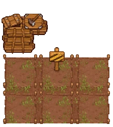
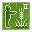

Zombie farm
| Zombie farm | |
|---|---|
 | |
Basic information
| |
Required Technology :
|
Zombie Gardening |
Related pages :
|
Zombies, Farming |
Building Information
| |
Horizontal x Vertical :
|
9x9 |
Rotatable :
|
False |
Location(s)
| |
| Kitchen garden | |

A zombie farm is a place where you can have a  zombie grow your crops. Those farms come in 3 tiers:
zombie grow your crops. Those farms come in 3 tiers:  ,
,  and
and  , where you can only grow basic crops or crops of that tier or below.
, where you can only grow basic crops or crops of that tier or below.
Cost
Note: The fields must not be tilled before, otherwise you are not able to build the farm. You can remove tilled fields using the kitchen garden workbench.
 Kitchen garden Kitchen garden
| |||
|---|---|---|---|
| Icon | Materials Required | Energy | Notes |
 tier 1 |
5× Wooden plank 3× Simple iron parts 10× Nails |
- + - |
ground tilled + structures built |
 tier 2 |
12× Quality fertilizer I |
N/A | Upgraded from tier 1 farm. |
tier 3 |
12× Quality fertilizer II |
N/A | Upgraded from tier 2 farm. |


Upgrading the Farm
You need to build a tier I farm first. Then you may upgrade it to tier II and afterwards to tier III. You have to use the fertilizer only once to upgrade the farm, it lasts forever.
Upgrading the farm to a higher tier has the following effects:
* The time which was arbitrarily chosen for this craft, diminished by the inefficiency of the given zombie.
Working the Farm
Take a  zombie near the farm, hit "E" to put it to work, and "E" again to remove it from the farm. Stand next to the zombie, hit "E" to select, and then select which crop should be produced or upgrade the farm.
zombie near the farm, hit "E" to put it to work, and "E" again to remove it from the farm. Stand next to the zombie, hit "E" to select, and then select which crop should be produced or upgrade the farm.
It takes a while for the crops to be produced - the higher the tier of the farm and the higher the work effiency of the zombie, the faster they work. You'll see a progress bar below the crop that's currently produced. After a while the products are stored automatically in a trunk of the kitchen garden. This sign  on the farm means that the trunk is full (or missing) and the work is blocked until some storage space is freed up (or constructed).
on the farm means that the trunk is full (or missing) and the work is blocked until some storage space is freed up (or constructed).
| Item Produced | Materials Required | Notes |
|---|---|---|
| 32-40× Beet 24× Beet seed |
24× Beet seed |
|
| 32-40× Cabbage 24× Cabbage seed |
24× Cabbage seed |
|
| 32-40× Carrot 24× Carrot seed |
24× Carrot seed |
|
| 32-40× Wheat 24× Wheat seed |
24× Wheat seed |
|
| Hemp |
N/A | Can not be farmed by zombies. |
| 20-28× Lentils 24× Lentil seed |
24× Lentil seed |
High quality crops need farm of appropriate tier. |
| 20-28× Onion 24× Onion seed |
24× Onion seed |
High quality crops need farm of appropriate tier. |
| 20-28× Pumpkin 24× Pumpkin seed |
24× Pumpkin seed |
High quality crops need farm of appropriate tier. |
Note: The number of crops produced, that are shown in this table and in the GUI of the farm, are only averages. The real numbers differ by a small random amount from those. Also the number of seeds varies around 24.
| ||||||||